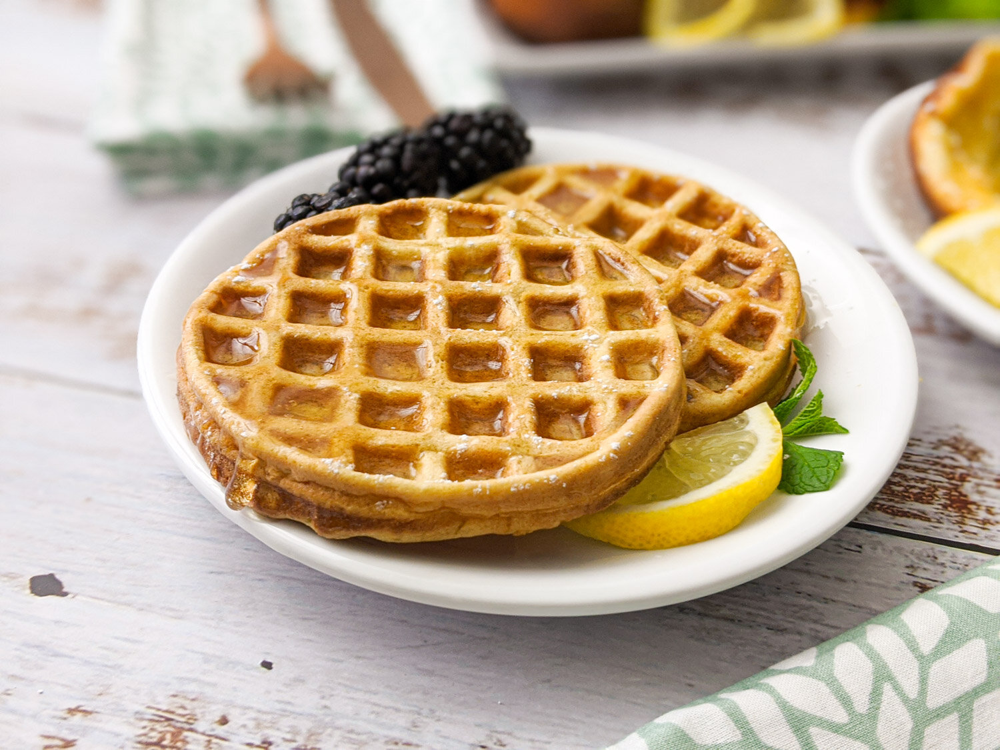

Lemon Waffle

Description
A recipe from one of my favorite video games, Final Fantasy 14.
Ingredients
Whole Milk
Lemon Juice
Egg, beaten
Butter, melted and cooled
Vanilla Extract
All-Purpose Flour
Kosher Salt
Granulated Sugar
Baking Soda
Zest of Two Lemons
Vegetable Oil
Fruit, Honey, Powdered Sugar for serving
Steps
Preheat the waffle iron
In a small bowl, stir the milk and lemon juice together, then set aside for 5 minutes. Stir in egg, butter, and vanilla extract.
In a large bowl, stir the flour, salt, granulate sugar, baking soda, and lemon zest together.
Pour the wet ingredients into the dry ingredients and stir until combined.
Lightly grease waffle iron with oil, then cook the batter. Apply more oil after cooking each waffle.
Sprinkle with powdered sugar and serve with honey and fruit.
Enjoy!